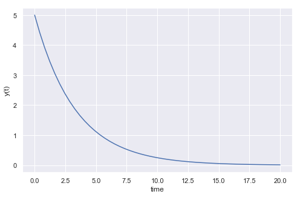
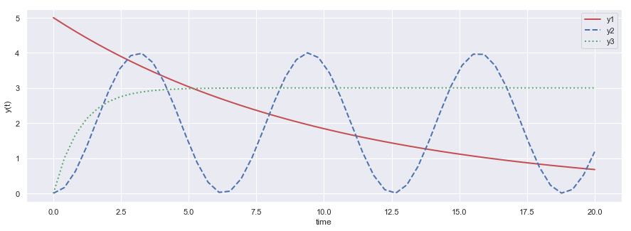
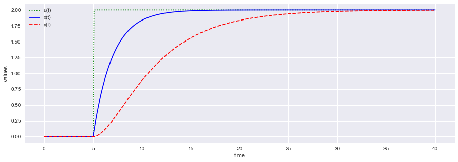

Ordinary Differential Equation
import numpy as np from scipy.integrate import odeint import matplotlib.pyplot as plt import seaborn as sns sns.set()
Ordinary differential Equation
Consider the differential equation:
$$\large{\frac{dy(t)}{dt} = - ky(t)}$$
with $ k =0.3$
def model(y,t): k = 0.3 dydt = -k * y return dydt
# initial condition y0 = 5 # time points t = np.linspace(0,20) # solve ODE y = odeint(model,y0,t)
for it, iy in zip(t[0:5],y[0:5]): print(it,iy)
0.0 [5.] 0.40816326530612246 [4.42375528] 0.8163265306122449 [3.91392204] 1.2244897959183674 [3.46284668] 1.6326530612244898 [3.06375722]
# plot results plt.figure(figsize = [8,5]) plt.plot(t,y) plt.xlabel('time') plt.ylabel('y(t)') plt.show()

Simultaneous differential equations
$$\large{\frac{dy_1(t)}{dt} = - k_1y_1(t)}$$
$$\large{\frac{dy_2(t)}{dt} = k_2 \sin(t)}$$
$$\large{\frac{dy_3(t)}{dt} = k_3 \exp(-t)}$$
# function that returns dy/dt def model(y,t,k): dy1dt = -k[0] * y[0] dy2dt = k[1]*np.sin(t) dy3dt = k[2]*np.exp(-t) dydt = [dy1dt,dy2dt,dy3dt] return dydt
# initial condition y0 = [5,0,0] # time points t = np.linspace(0,20) # solve k1 = 0.1 k2 = 2.0 k3 = 3.0 k =[k1,k2,k3] '''solve ODEs''' y = odeint(model,y0,t,args=(k,)) y1 = np.empty_like(t) y2 = np.empty_like(t) y3 = np.empty_like(t) for i in range(len(t)): y1[i] = y[i][0] y2[i] = y[i][1] y3[i] = y[i][2]
# plot results plt.figure(figsize = [15,5]) plt.plot(t,y1,'r-',linewidth=2,label='y1') plt.plot(t,y2,'b--',linewidth=2,label='y2') plt.plot(t,y3,'g:',linewidth=2,label='y3') plt.xlabel('time') plt.ylabel('y(t)') plt.legend() plt.show()

Implementing $tspan$ method
$$\large{2\frac{dx(t)}{dt} = - x(t) + u(t)}$$
$$\large{5 \frac{dy(t)}{dt} = -y(t) + x(t)}$$
$$u = 2S(t-5),~~ x(0) = 0,~~ y(0) =0$$
# function that returns dz/dt def model(z,t,u): x = z[0] y = z[1] dxdt = (-x + u)/2.0 dydt = (-y + x)/5.0 dzdt = [dxdt,dydt] return dzdt
# initial condition z0 = [0,0] # number of time points n = 401 # time points t = np.linspace(0,40,n) # step input u = np.zeros(n) # change to 2.0 at time = 5.0 u[51:] = 2.0 # store solution x = np.empty_like(t) y = np.empty_like(t) # record initial conditions x[0] = z0[0] y[0] = z0[1] # solve ODE for i in range(1,n): # span for next time step tspan = [t[i-1],t[i]] # solve for next step z = odeint(model,z0,tspan,args=(u[i],)) # store solution for plotting x[i] = z[1][0] y[i] = z[1][1] # next initial condition z0 = z[1] # plot results plt.figure(figsize = [15,5]) plt.plot(t,u,'g:',label='u(t)') plt.plot(t,x,'b-',label='x(t)') plt.plot(t,y,'r--',label='y(t)') plt.ylabel('values') plt.xlabel('time') plt.legend(loc='best') plt.show()
